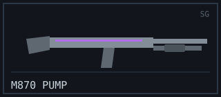
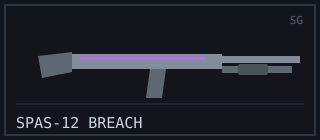
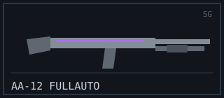
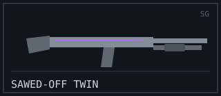

SHOTGUN
Role: Point-Blank Room-Clearer
The shotgun owns the doorway. Inside a few metres nothing survives the spread, which makes these the kings of tight interiors, blind corners, and holding a hallway alone. Step back into the open, though, and the pellets scatter into confetti — a shotgun operator lives and dies by how close they can force the fight.
Arsenal Comparison
| Weapon | Damage | Fire Rate (RPM) | Magazine | Reload (s) | Range (m) | Recoil (1–10) | Price ($) |
|---|---|---|---|---|---|---|---|
| M870 “Pump” | 90 | 70 | 7 | 4.0 | 12 | 6 | 1200 |
| SPAS-12 “Breach” | 85 | 90 | 8 | 3.6 | 14 | 6 | 1300 |
| AA-12 “Fullauto” | 55 | 300 | 20 | 3.8 | 13 | 7 | 1800 |
| Sawed-Off “Twin” | 100 | 60 | 2 | 2.6 | 9 | 8 | 1100 |
Weapon Files
M870 “Pump”

Combat Stats
- Fire Mode: Pump-action
- Ammo Type: 12-gauge buckshot
- Wall Penetration: Low
- Mobility: 88%
Description / Lore
The archetype. Rack the pump, land the spread, and anyone inside twelve metres drops in a single shell. Slow between shots and merciless if you miss — but few sounds in the game frighten a pushing team like that unmistakable ka-chunk.
Unlock Requirement
Available by default — Variant “Riot” unlocks at 250 shotgun kills.
SPAS-12 “Breach”

Combat Stats
- Fire Mode: Pump / semi-automatic
- Ammo Type: 12-gauge buckshot
- Wall Penetration: Low
- Mobility: 88%
Description / Lore
A breaching specialist with a tighter choke than the Pump, stretching its killing range a couple of precious metres farther. Favoured by players who like to clear rooms with momentum — door open, shell fired, next target already lined up.
Unlock Requirement
Reach Account Level 10 — Variant “Enforcer” at 40 entry kills.
AA-12 “Fullauto”

Combat Stats
- Fire Mode: Full-automatic
- Ammo Type: 12-gauge buckshot
- Wall Penetration: Low
- Mobility: 84%
Description / Lore
Hold the trigger and the Fullauto turns a corridor into a no-go zone. Each shell hits softer than a pump, but a 20-round drum fed automatically means you rarely need just one. The ultimate answer to a team that likes to stack a single entrance.
Unlock Requirement
Score 20 multi-kills with shotguns — Variant “Overkill” at Level 28.
Sawed-Off “Twin”

Combat Stats
- Fire Mode: Double-barrel (break action)
- Ammo Type: 12-gauge buckshot
- Wall Penetration: Low
- Mobility: 92%
Description / Lore
Two barrels, two chances, then a long, vulnerable reload. The Twin dumps a colossal burst of pellets at spitting distance — the highest point-blank damage on the rack — and asks you to make both shots count before you are caught reloading.
Unlock Requirement
Win 15 point-blank duels — Variant “Outlaw” at Level 24.
Signature Showcase — M870 Pump
Field footage: how the pump-action cycles and chambers each shell.
External Intel
- Reference: Shotgun (Wikipedia)
- Showcase video: How a pump shotgun works (YouTube)